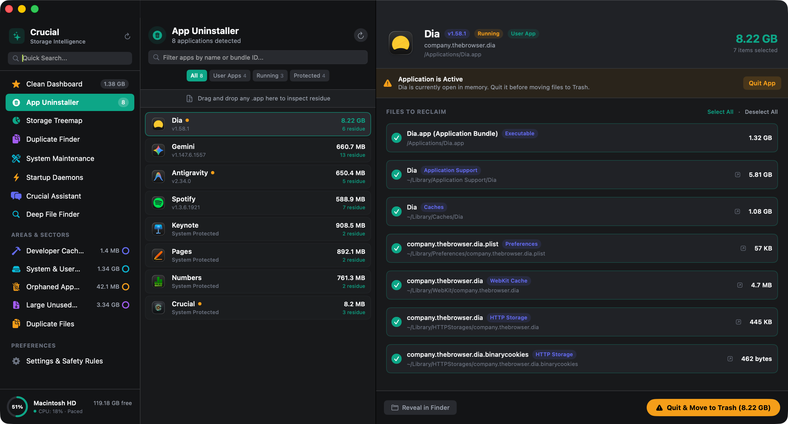
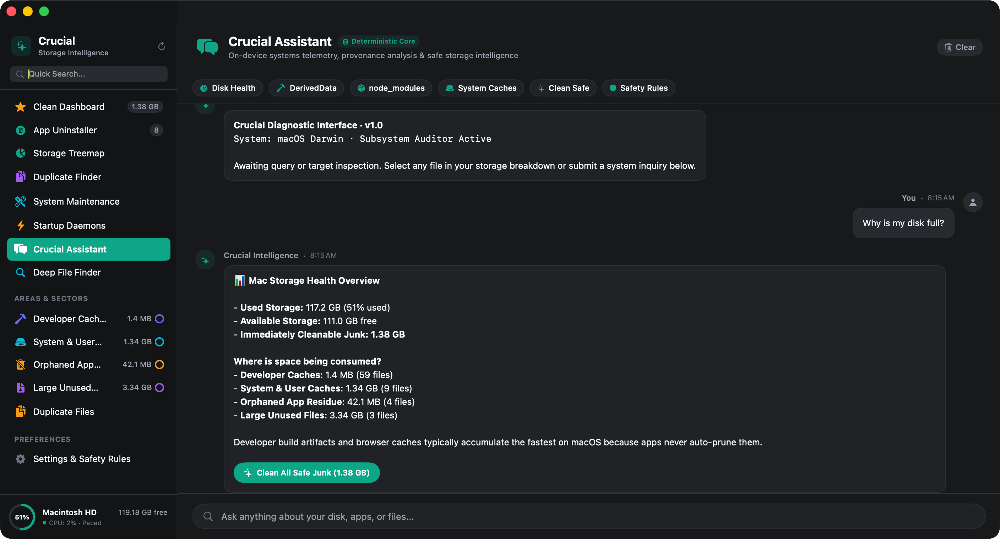
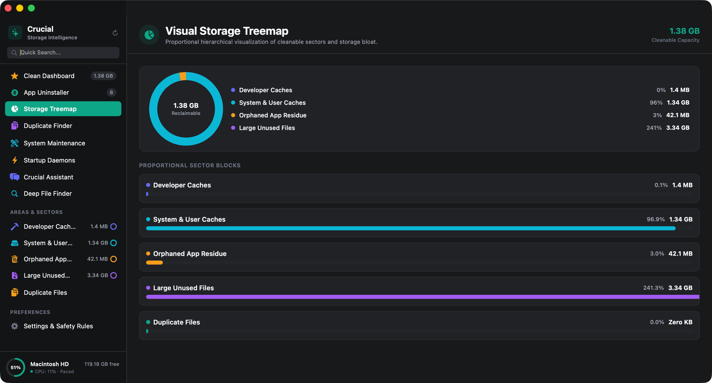
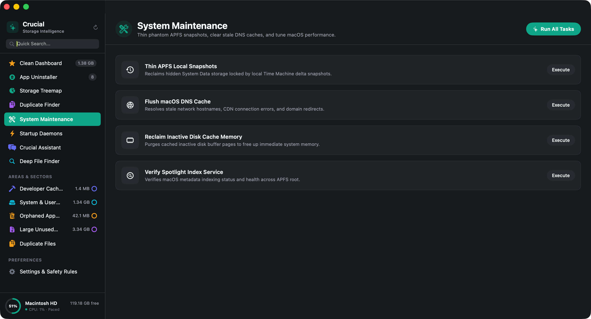

Quiet storage intelligence for your Mac.
Zero noise. Zero subscriptions.
Crucial is a quiet, native macOS utility crafted in the design language of Cultured Code Things 3. It traces orphaned app residues across hidden Library folders, thins phantom APFS snapshots, and features an onboard 100% offline local LLM that explains every file before you touch it.





Product Showcase
See Crucial in 30 seconds.
Smooth, flowy, and whisper-quiet.
No bloated background daemons. No mysterious deletions. Watch how Crucial unearths gigabytes of hidden residue and explains everything in real-time.
The Root Problem
macOS hides gigabytes.
Apps leave them behind.
When you drag an application to the Trash, macOS only deletes the bundle itself. Every preference, cache store, and background database remains on your drive forever.
Application Leftovers
Moving an app to the Trash leaves up to 8+ GB of hidden files across Application Support, WebKit caches, and HTTP storage.
Runaway Build Caches
Xcode DerivedData, node_modules, SPM artifacts, and Python .venv files never auto-prune, silently consuming 30–80 GB.
Local APFS Snapshots
Time Machine creates invisible local APFS snapshots that lock deleted files to the filesystem, masquerading as bloated System Data.
Compare
Crucial stays quiet.
Others shout, poll in background, and charge subscriptions.
Commercial cleaners run 450 MB resident daemons and charge $40/year. Command-line utilities delete files irreversibly with no explanation. Crucial is a single 5.7 MB native binary: zero daemons, 100% offline local AI, and free forever.
| Architecture & Features |
Crucial
|
CleanMyMac X | DaisyDisk | Sensei |
|---|---|---|---|---|
|
Background Daemon Overhead
Resident RAM when window is closed
|
0 MB (Quits 100%) | 420+ MB resident daemon | 0 MB (No daemon) | 180 MB background daemon |
|
Local AI Safety Explanations
Provenance reasoning before deletion
|
On-Device Metal LLM | None (Pre-set rules) | None | None |
|
Deep App Residue Tracing
Inspects all 7 macOS Library directories
|
Yes + Finder Trash Staging | Yes (Commercial) | Manual delete only | Basic uninstaller |
|
Cryptographic Duplicate Finder
Byte-exact SHA-256 hardware acceleration
|
2,163 MB/s SHA-256 | Heuristic name match | None | None |
|
APFS Snapshot & RAM Hygiene
Thin local snapshots & reclaim inactive cache
|
One-Click Native Scripts | Yes (Paid Tier) | No | Yes |
|
Network Telemetry & Privacy
Cloud connectivity and analytics tracking
|
100% Offline · Zero Trackers | Cloud analytics & license checks | Analytics | Network telemetry |
|
Binary Footprint
Disk size of the installed application
|
5.7 MB (Pure Swift) | 180+ MB (Electron/Monolith) | 12 MB | 65 MB |
|
Price & License
Subscription requirements
|
Free Forever (MIT) | $39.95 / year subscription | $9.99 one-time | $29 / year subscription |
Verified Benchmarks
Built for Apple Silicon.
Engineered for sub-millisecond responsiveness.
Crucial runs directly on the Metal compute pipeline with zero bridge layers and zero Electron overhead.
Frequently Asked Questions
Questions & Answers.
Everything you need to know.
rm -rf commands, Crucial stages all deleted files into the native macOS Finder Trash. If you ever change your mind or need a file back, you can right-click it in Trash and select "Put Back" at any time.
How to open it (one-time setup):
1. Click Done on the alert dialog.
2. Open macOS System Settings → Privacy & Security and scroll down to the Security section.
3. Click Open Anyway next to "Crucial was blocked", enter your Touch ID or Mac password, and click Open.
Or via Terminal: Run
xattr -cr /Applications/Crucial.app after dragging Crucial to Applications.